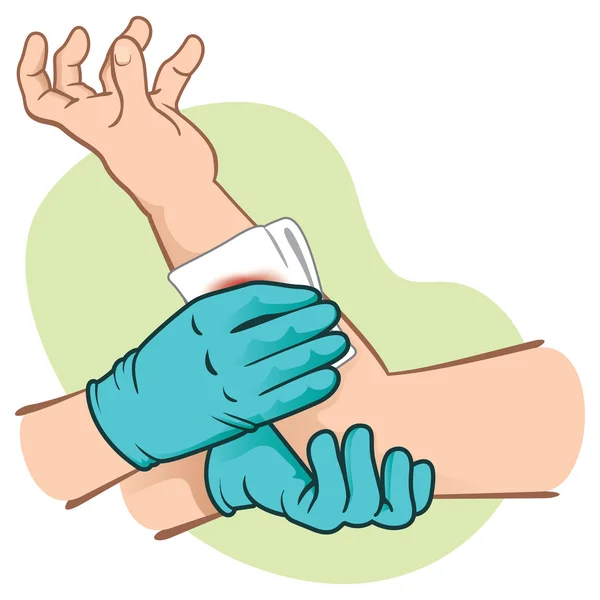
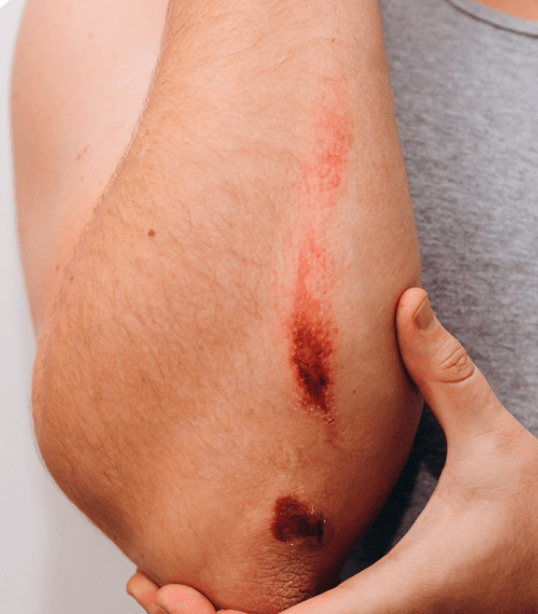
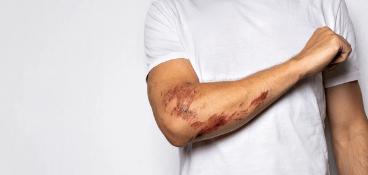
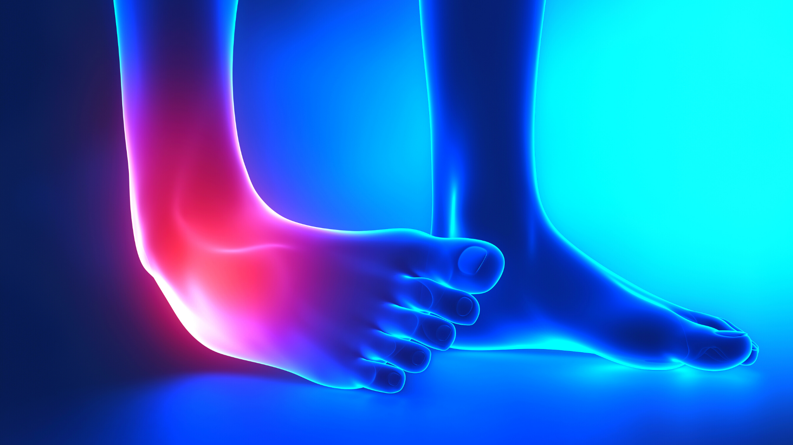
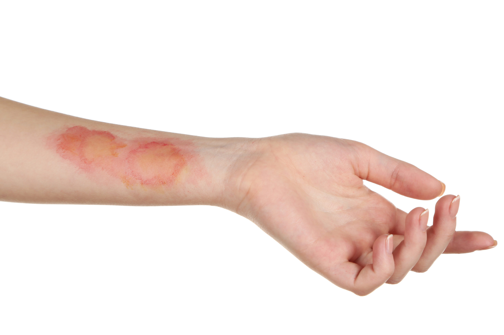
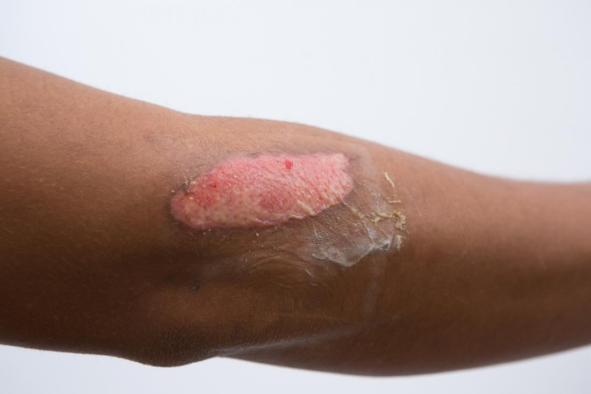
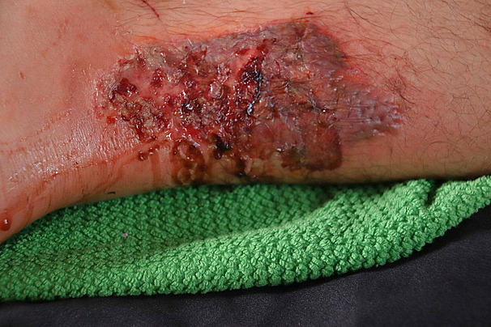
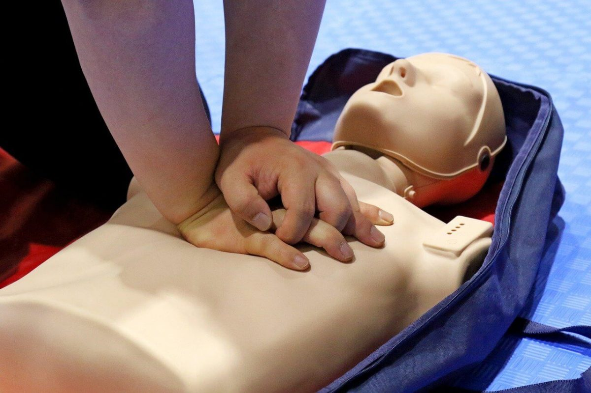
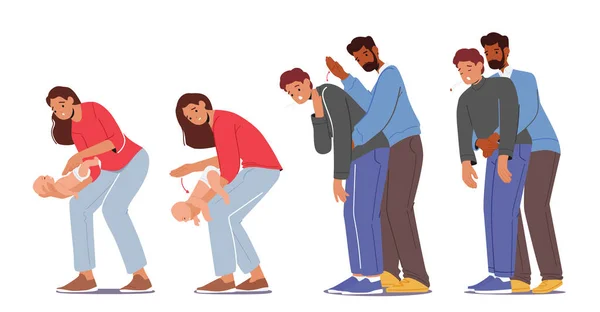

Bienvenido a Primeros Auxilios Conectados
Este sitio web está hecho por alumnas de la promoción 17 del Colegio Integral Guayana, con el objetivo de concientizar e informar correctamente sobre la aplicación de los primeros auxilios en diversas situaciones de emergencia. ¡El conocimiento salva vidas!
Aquí encontrarás información básica y pasos a seguir en casos comunes como hemorragias, heridas, esguinces, quemaduras, y situaciones que requieren RCP o la maniobra de Heimlich. Recuerda que esta guía es informativa y no reemplaza la formación profesional certificada.
Control de Hemorragias
Una hemorragia es la pérdida de sangre. Identificar su gravedad y actuar rápidamente es vital.
¿Cómo detectar la gravedad?
- Hemorragia Capilar: Sangrado superficial, lento y en poca cantidad (raspones). Generalmente se detiene sola.
- Hemorragia Venosa: Sangre de color rojo oscuro, flujo continuo y uniforme. Puede ser abundante.
- Hemorragia Arterial: Sangre de color rojo brillante, sale a borbotones (pulsátil) al ritmo del corazón. ¡Es la más grave y requiere atención inmediata!
¿Cómo detener el sangrado externo?
- Presión Directa: Coloca una gasa estéril o paño limpio sobre la herida y presiona firmemente con la palma de la mano. Mantén la presión constante.
- Elevación: Si la herida está en un brazo o pierna y no sospechas fractura, elévala por encima del nivel del corazón mientras mantienes la presión.
- No retires el primer apósito: Si la gasa se empapa, no la quites. Coloca otra encima y sigue presionando.
- Presión Indirecta (Puntos de Presión): Solo si la hemorragia es arterial y no se controla con presión directa y elevación, aplica presión sobre la arteria principal que irriga la zona (braquial en el brazo, femoral en la ingle) contra el hueso. Esto requiere conocimiento específico.
- Llama a Emergencias: Ante cualquier hemorragia abundante, que no cede, o si es arterial, llama inmediatamente a los servicios de emergencia (ej. 112, 911).


Heridas
Las heridas son lesiones que rompen la continuidad de la piel o mucosas. Las más comunes incluyen cortes, abrasiones (raspones) y punciones. Para ayudar con heridas menores, el primer paso es lavarse bien las manos y luego limpiar suavemente la herida con agua y jabón neutro, retirando cualquier suciedad visible. Después, se puede aplicar un antiséptico suave y cubrir la lesión con un apósito estéril o venda limpia para protegerla de infecciones, cambiándolo si se ensucia o moja. Es crucial buscar atención médica si la herida es profunda, extensa, sangra mucho, tiene objetos incrustados, fue causada por mordedura, o muestra signos de infección (pus, enrojecimiento excesivo, calor, fiebre).


Esguinces
Un esguince ocurre cuando los ligamentos que unen los huesos en una articulación se estiran demasiado o se desgarran, generalmente debido a una torcedura, caída o golpe brusco. Las articulaciones más afectadas suelen ser tobillos, muñecas y rodillas.
Cómo ayudar en caso de esguince (Método RICE):
- Reposo (Rest): Evitar mover o cargar peso sobre la articulación lesionada.
- Hielo (Ice): Aplicar compresas frías o hielo envuelto en un paño durante 15-20 minutos cada 2-3 horas, especialmente las primeras 48 horas, para reducir dolor e inflamación.
- Compresión (Compression): Vendar la articulación con una venda elástica (sin apretar demasiado para no cortar la circulación) para dar soporte y limitar la hinchazón.
- Elevación (Elevation): Mantener la extremidad lesionada elevada por encima del nivel del corazón siempre que sea posible.
Se debe buscar evaluación médica si hay dolor intenso, incapacidad para mover la articulación, deformidad visible o si no hay mejoría.

Quemaduras
Las quemaduras son lesiones causadas por calor, químicos, electricidad o radiación. Se clasifican según su profundidad:
- Quemaduras de Primer Grado: Afectan solo la capa externa de la piel (epidermis). Causan enrojecimiento, dolor e hinchazón leve. Recomendación: Enfriar la zona con agua corriente fría (no helada) durante 10-15 minutos. Aplicar crema hidratante o gel de aloe vera. No requieren cubrirse usualmente.
- Quemaduras de Segundo Grado: Afectan la epidermis y parte de la dermis. Causan enrojecimiento intenso, dolor, ampollas e hinchazón significativa. Pueden ser superficiales o profundas. Recomendación: Enfriar con agua fría abundante. No romper las ampollas. Cubrir con apósito estéril antiadherente y buscar atención médica, especialmente si son extensas o en zonas delicadas.
- Quemaduras de Tercer Grado: Destruyen todas las capas de la piel e incluso pueden afectar tejidos más profundos (músculos, huesos). La piel puede verse carbonizada, blanca o correosa. Puede haber poco o ningún dolor inicial por daño nervioso. Recomendación: ¡Emergencia médica! Llamar inmediatamente a los servicios de urgencia. No retirar ropa pegada. Cubrir la zona con un paño limpio y seco mientras llega la ayuda. No aplicar agua ni ungüentos.



Reanimación Cardiopulmonar (RCP)
La RCP sirve para intentar mantener el flujo de sangre oxigenada al cerebro y otros órganos vitales cuando una persona ha dejado de respirar y su corazón ha dejado de latir (parada cardiorrespiratoria).
Cómo aplicar RCP básica (solo compresiones para público general):
- Seguridad y Respuesta: Asegura la zona. Comprueba si la víctima responde (sacúdela suavemente por los hombros y pregúntale en voz alta).
- Pedir Ayuda: Si no responde, grita pidiendo ayuda y llama (o pide a alguien que llame) a emergencias inmediatamente. Pide un Desfibrilador Externo Automático (DEA) si hay uno disponible.
- Comprobar Respiración: Abre la vía aérea (inclina la cabeza hacia atrás y eleva el mentón). Mira, escucha y siente si respira normalmente durante máximo 10 segundos. Si no respira o solo jadea/boquea, inicia compresiones.
- Compresiones Torácicas:
- Arrodíllate al lado de la víctima.
- Coloca el talón de una mano en el centro del pecho (mitad inferior del esternón). Pon la otra mano encima y entrelaza los dedos.
- Con los brazos rectos, comprime el pecho hacia abajo unos 5-6 cm (adultos).
- Realiza compresiones a un ritmo de 100-120 por minuto (rápido y constante).
- Deja que el pecho se expanda completamente entre compresiones.
- Continuar: Sigue las compresiones sin parar hasta que llegue ayuda profesional, la víctima reaccione, o estés agotado. Si llega un DEA, úsalo siguiendo sus instrucciones.
Riesgos: Aunque vital, la RCP puede causar fracturas de costillas o lesiones internas. Sin embargo, el riesgo de no hacer nada en una parada cardíaca es la muerte. Es fundamental recibir formación práctica en RCP.

Maniobra de Heimlich
La maniobra de Heimlich (compresiones abdominales) es una técnica de primeros auxilios para desobstruir el conducto respiratorio, normalmente bloqueado por un trozo de alimento u otro objeto. Se aplica cuando la persona se está atragantando y no puede respirar, toser o hablar.
Cómo aplicarla correctamente:
- Adultos y Niños mayores de 1 año (Conscientes):
- Párate detrás de la persona y rodea su cintura con tus brazos.
- Forma un puño con una mano y colócalo entre el ombligo y la punta del esternón.
- Agarra el puño con la otra mano.
- Realiza compresiones rápidas y fuertes hacia adentro y hacia arriba, hasta que expulse el objeto o pierda el conocimiento.
- Bebés menores de 1 año (Conscientes):
- Sostén al bebé boca abajo sobre tu antebrazo, apoyado en tu muslo, con la cabeza más baja que el tronco.
- Da 5 golpes firmes en la espalda, entre los omóplatos, con el talón de tu mano.
- Si no funciona, gíralo boca arriba sobre tu otro antebrazo.
- Realiza 5 compresiones en el centro del pecho (justo debajo de la línea de los pezones) con dos dedos.
- Alterna 5 golpes en la espalda y 5 compresiones en el pecho hasta que expulse el objeto o quede inconsciente.
- Personas Obesas o Embarazadas (Conscientes): Realiza las compresiones en el centro del pecho, en lugar del abdomen.
- Si la Persona Pierde el Conocimiento: Colócala suavemente en el suelo, llama a emergencias e inicia RCP. Antes de intentar ventilaciones (si estás entrenado), revisa la boca por si ves el objeto y puedes extraerlo con cuidado.
Riesgos: La maniobra puede causar lesiones internas (costillas, órganos abdominales). Cualquier persona que haya recibido la maniobra de Heimlich debe ser evaluada por un médico después, incluso si parece estar bien.
